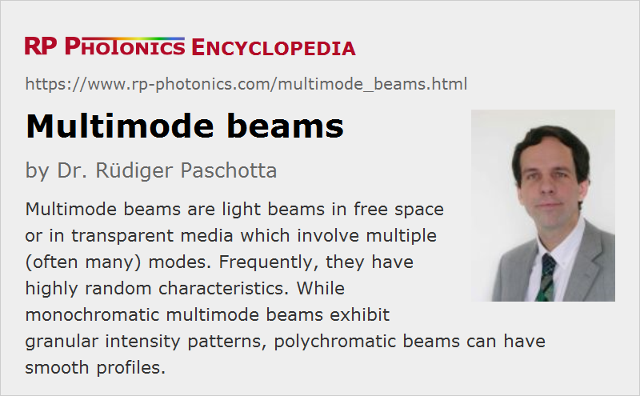

Multimode Beams
Definition: light beams in free space or in transparent media which involve multiple (often many) modes, frequently with highly random characteristics
More general terms: light beams
More specific term: multimode laser beams
Opposite term: diffraction-limited beams, single-mode beams
German: Multimode-Strahlen
Categories: general optics, physical foundations
How to cite the article; suggest additional literature
Author: Dr. Rüdiger Paschotta
Multimode beams are light beams in free space or in transparent optical materials which involve multiple spatial modes. The conceptually simplest situations are encountered in cases involving waveguide structures such as optical fibers, where there is a well defined set of waveguide modes, and the total optical power is spread over some (often large) number of such modes. In case of free-space light beams, one may choose a set of free-space propagation modes, e.g. TEM modes for a given beam radius of the fundamental Gaussian mode, but that choice is arbitrary. The number of involved modes is then dependent on that choice.
Frequently, multimode beams have highly random characteristics, because a large number of modes is involved, where the distribution of powers and the optical phases of the particular modes are not known in detail, but are only statistically described.
In principle, a laser beam with a single spatial mode but multiple frequency components may also be called multimode, but what is usually meant is a beam involving multiple spatial modes.
Monochromatic Multimode Beams
The simplest cases are (quasi-)monochromatic multimode beams, i.e., those involving only a single optical frequency. Such a beam may arise, for example, by launching light from a single-frequency laser into a multimode fiber, where the input beam profile is not matched to one particular fiber mode. By using an optical diffuser, or alternatively by strong bending of a section of fiber, one may obtain a broader distribution of optical power over the fiber modes.
As an example, Figure 1 shows a simulated intensity profile of multimode radiation in a fiber, which is largely restricted to the area of the fiber core.
It is characteristic for monochromatic multimode beams that the intensity profile exhibits a granular pattern as seen in Figure 1. That arises from the interference of the many mode fields, most of which exhibit oscillating amplitude patterns. The more higher-order modes are involved, which exhibit a stronger beam divergence, the finer are the granular structures.
The details of the intensity profile (e.g. the positions of intensity maxima) change during propagation along the fiber (often already within a couple of micrometers) as the relative optical phases of the modes change due to their different propagation constants.
Similar results would be obtained when a multimode free-space beam is generated, e.g. by sending a single-frequency laser beam first through an optical diffuser and then through an aperture which limits the beam divergence. Again, one would obtain a granular intensity pattern which changes during propagation.
For numerical simulations of monochromatic multimode beam propagation, one generally uses some kind of beam propagation method.
Polychromatic Multimode Beams
Substantial new aspects come into play when considering polychromatic multimode beams. Generally, the different frequency components of such a beam will exhibit different amplitude and intensity patterns – often with similar granular structures, but with the maxima and minima occurring at different locations. As a result, the total intensity profile is often quite smooth.
Important details can substantially depend on how such a beam is generated. Some examples:
- Sources of thermal radiation, e.g. torches based on incandescent lamps, generate beams with a broad and smooth optical spectrum. Here, one usually has a very smooth overall intensity profile due to the averaging out of a large number of intensity patterns of different frequency components. The contributions from different intensity components are statistically quite similar, i.e., with no significant correlation between spatial profile and optical frequency. Even when strongly restricting the optical bandwidth e.g. with a bandpass filter, one usually still obtains a smooth overall intensity profile.
- Profoundly different situations are often encountered with laser beams, which are generated with lasers where multiple spatial resonator modes are involved. For example, a lamp-pumped solid-state laser often generates light with a large number of spatial modes. In contrast to the situation of thermal radiation, however, there is a strong correlation between spatial patterns and optical frequencies, because each resonator mode has a well defined intensity pattern and also a relatively well defined optical frequency. Therefore, by sending such radiation through a bandpass filter, one could often retrieve the intensity pattern corresponding to a particular resonator mode, or at least a superposition of a small number of modes (due to mode degeneracies).
- Similar results as in the second example case are obtained for multimode laser diodes, e.g. diode bars, only that instead of free-space resonator modes one has waveguide modes in such cases.
Numerical simulations of the propagation of polychromatic multimode beams may again be based on numerical beam propagation. Here, a representative set of frequency components is selected, a monochromatic propagation is performed for each one, and the results are combined (e.g. by adding up the intensity profiles). Alternative numerical methods such as ray tracing are based on a statistical distribution of the light field, involving a limited set of parameters. Such methods can be computationally much more efficient, particularly in cases where a large number of frequency components and/or long propagation distances are involved.
Evolution of Free-space Intensity Profiles
In contrast to Gaussian beams, for example, which maintain their Gaussian shape during propagation (with changes only of the beam radius), the shape of the transverse intensity profile for multimode beam will generally change during propagation. For example, the beam profile of a diode bar at a short distance after an applied fast axis collimator has an approximately supergaussian intensity profile in the “long” direction. After longer propagation distance, however, the profile will be closer to Gaussian, reflecting the angular intensity distribution. The supergaussian profile may be obtained again when focusing the beam with a lens – but only around the beam focus.
Limitations of Multimode Beams
Beam Quality
Multimode beams generally have a relatively poor beam quality (far from diffraction-limited), i.e., a low spatial coherence – particularly when a large number of modes is involved. Typically, the beam quality is quantified with the beam parameter product or the M2 factor. It can be measured with certain beam profilers.
Smooth Intensity Profiles
As explained above, a multimode beam can have a smooth intensity profile only if it is polychromatic. Therefore, single-mode beams are required when monochromatic radiation with a smooth intensity profile is required. For example, Gaussian beams are then often used.
Amplification and Transmission Through Optical Components
Multimode beams cannot be transmitted through single-mode fibers. Most fiber amplifiers can amplify only single-mode or few-mode light. One can also make fiber amplifiers for highly multimode radiation by using a large multimode fiber core, but that leads to substantially reduced gain efficiency and mode-dependent gain.
For efficiently launching a multimode beam into a multimode fiber, the beam profile at the input facet of the fiber needs to be limited to the fiber core, and at the same time the beam divergence must not exceed the limit set by the numerical aperture of the fiber.
Even various bulk-optical devices are more or less limited to working with single-mode beams only. For example, and acousto-optic modulator may in principle work with multimode beams, but it may require substantial beam focusing while at the same time the beam divergence needs to be limited; optimal performance may thus be obtained only with single-mode beams.
Questions and Comments from Users
Here you can submit questions and comments. As far as they get accepted by the author, they will appear above this paragraph together with the author’s answer. The author will decide on acceptance based on certain criteria. Essentially, the issue must be of sufficiently broad interest.
Please do not enter personal data here; we would otherwise delete it soon. (See also our privacy declaration.) If you wish to receive personal feedback or consultancy from the author, please contact him e.g. via e-mail.
By submitting the information, you give your consent to the potential publication of your inputs on our website according to our rules. (If you later retract your consent, we will delete those inputs.) As your inputs are first reviewed by the author, they may be published with some delay.
See also: laser beams, diffraction-limited beams, coherence, Gaussian beams, multimode fibers
and other articles in the categories general optics, physical foundations
|  |
If you like this page, please share the link with your friends and colleagues, e.g. via social media:
These sharing buttons are implemented in a privacy-friendly way!